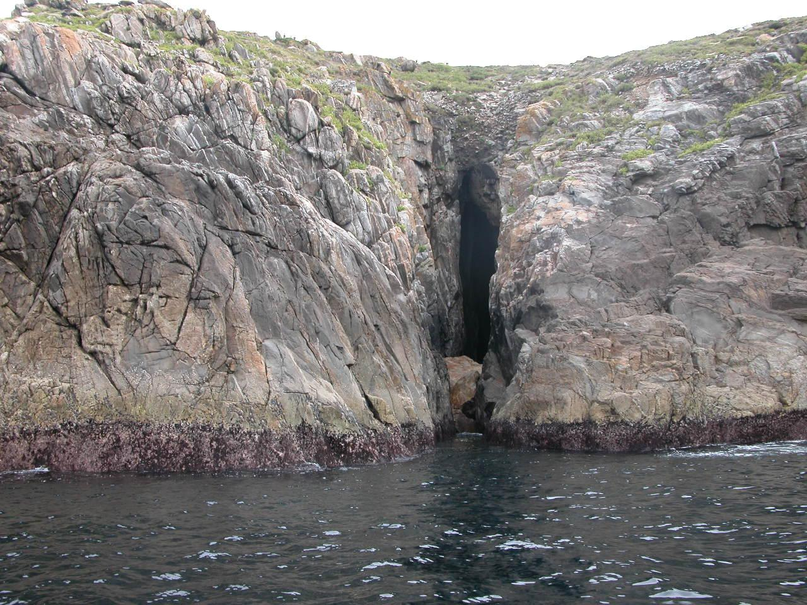

Mitos
A illa de Ons



Ficha rápida
- Nome: Illa de Ons
- Lugar: Ría de Pontevedra
- Forma parte de: Parque Nacional Marítimo-Terrestre das Illas Atlánticas de Galicia
- Mito máis coñecido: O Burato do Inferno, unha profunda fenda na que, segundo a tradición, poden escoitarse os berros das almas en pena.
- Outra crenza popular: A Santa Compaña entra na illa pola punta do Centolo e un touro con cornos de ouro protexe aos seus habitantes.
O mito en si
O outro día ía escoitando Spotify cando, de repente, empezou a soar a Muiñeira de Ons. Non a escoitara nunca e quedei prendada. Puxena en bucle durante un bo rato. Hai unha parte da letra que me chamou especialmente a atención:
"Adeus illa, adeus illa,
na popa voute mirando.
A saída será agora,
a volta sabe Deus cando."
Esta letra fíxome pensar en todos aqueles mariñeiros que marchaban ao mar sen saber cando ían volver... ou mesmo se volverían.
Moita xente pensa que a illa son só praias ou rutas para ir camiñar, pero, como di a canción, é unha illa que dependía do mar e supoño que grazas a iso naceron tantas lendas e mitos nela.
A máis coñecida de todas é a do Burato do Inferno. Se buscades fotos xa impresiona, pero imaxinade velo en persoa. É unha fenda enorme aberta entre os cantís que cae case corenta metros ata o mar. Din que, cando hai temporal, as ondas baten con tanta forza que o ruído parece o das almas en pena berrando desde o inferno. De aí vén o nome. Sempre me pareceu unha desas historias que dan un pouco de respecto, sobre todo se a escoitas antes de visitar a illa.
E esa non é a única. Tamén se di que a Santa Compaña entra en Ons pola punta do Centolo e percorre os camiños ata chegar ao cemiterio. O curioso é que tamén existe a crenza de que un touro con cornos de ouro protexe aos habitantes da illa e impide que as ánimas lles fagan dano.
Agora teño unha escusa máis para ir a Ons. Quero chegar ata o miradoiro do Burato do Inferno, sentarme un anaco mirando o mar e poñer a Muiñeira de Ons.
Bibliografía
Leyendas e historia de la Isla de Ons - Naviera Mar de Ons. (s. f.).
https://www.mardeons.es/blog/leyendas-e-historia-de-la-isla-de-ons/